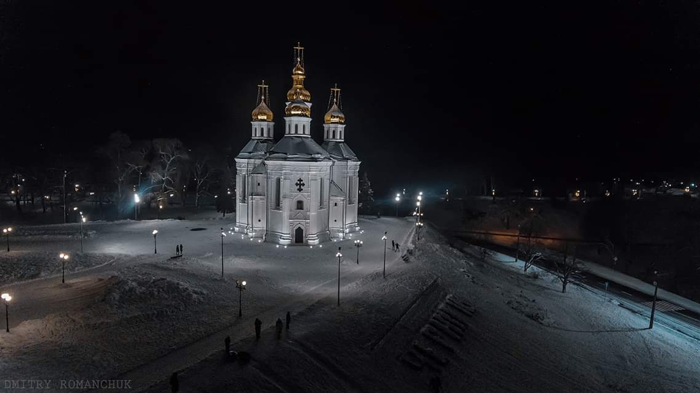
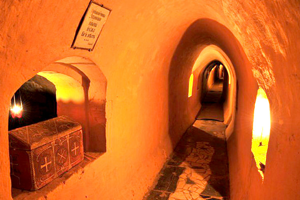
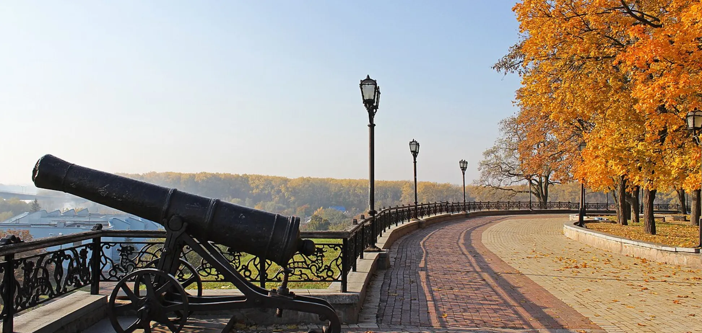
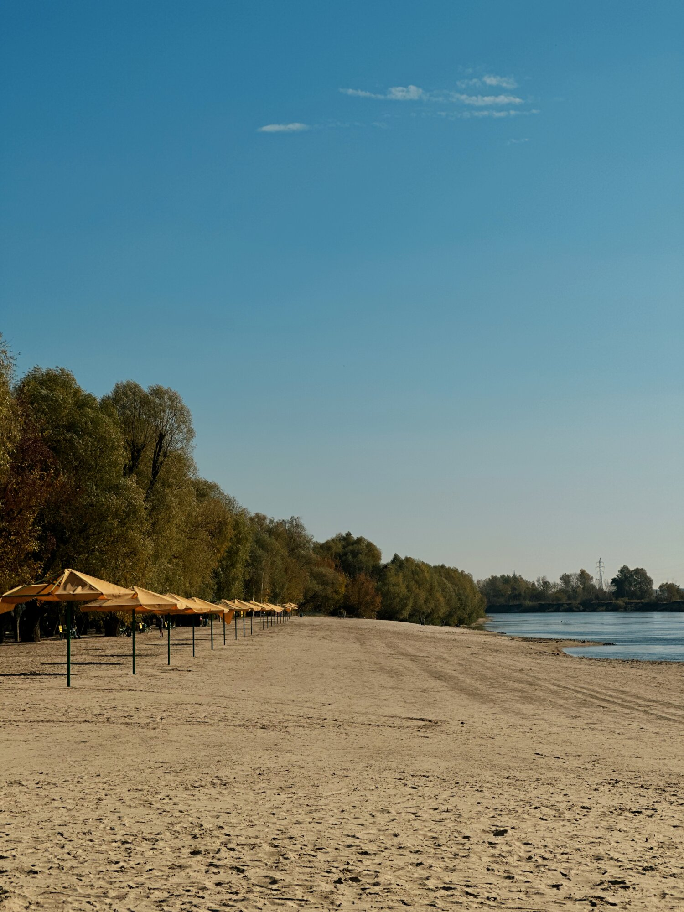
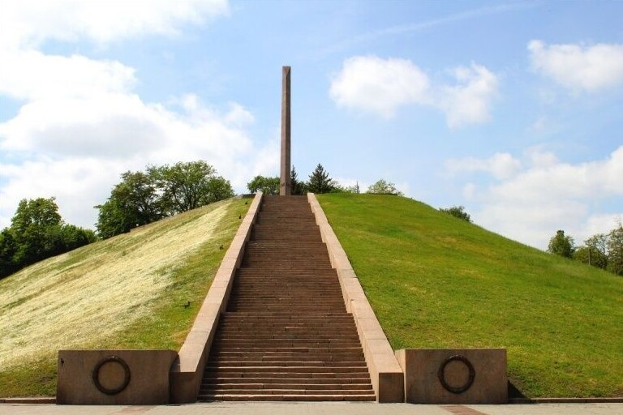

привіт!
-
Сьогодні я розкажу вам про місто, в якому я проживаю — це Чернігів. Перше, з чого хочеться почати, — це Катерининська церква. Вона зустрічає нас при в’їзді в місто і є однією з його найвідоміших пам’яток.

Катерининська церква — одна з найвідоміших пам’яток Чернігова. Вона була збудована у XVIII столітті на честь козаків, які брали участь у взятті фортеці Азов. Церква виконана в стилі українського бароко і вирізняється своїми білими стінами та золотими куполами. Вона розташована на підвищенні, тому її добре видно вже при в’їзді до міста. Катерининська церква є справжнім символом Чернігова та приваблює як туристів, так і місцевих жителів
-

Антонієві печери — ще одна відома пам’ятка Чернігова.. Це підземний комплекс, який був заснований у XI столітті ченцем Антонієм. Печери мають довгі коридори та невеликі кімнати, де раніше жили монахи. Цікавий факт: загальна довжина печер становить понад 300 метрів, і вони є одними з найдавніших підземних споруд в Україні.
-

Чернігівський Вал — це одне з найвизначніших історичних місць міста. У давнину тут розташовувалася фортеця, яка захищала Чернігова. від ворогів і була важливою частиною оборони міста. Сьогодні Вал є популярним місцем для прогулянок як серед місцевих жителів, так і туристів. Тут можна побачити старовинні гармати, зелені алеї та насолодитися красивими краєвидами на річку Десну. На території Валу також розташовано багато історичних пам’яток, зокрема стародавні храми та будівлі, які збереглися ще з часів Київської Русі. Це місце поєднує в собі історію, культуру та природу, створюючи особливу атмосферу спокою. Цікавий факт: на Валу встановлено 12 гармат, які стали одним із символів Чернігова. За легендою, вони були подаровані місту за його мужність і оборону.
-

Золотий пляж — це одне з найпопулярніших місць відпочинку в Чернігова., розташоване на березі річки Десни. Влітку сюди приходять місцеві жителі та туристи, щоб відпочити, поплавати та насолодитися природою. Пляж має піщаний берег і гарні краєвиди, тому це чудове місце для прогулянок і відпочинку з друзями. Цікавий факт: Золотий пляж вважається одним із найчистіших і найкращих пляжів у Чернігові, а пісок тут має приємний золотистий відтінок, через що він і отримав свою назву.
-

Болдина гора — одне з найвідоміших історичних місць Чернігова. Вона розташована на високому березі річки Десни і здавна була важливим місцем для поселень та оборони. Тут розташовані старовинні храми, монастирі та знамениті Антонієві печери. Болдина гора також відома як місце, де відбувалися літературні та культурні заходи ще з давніх часів. Цікавий факт: з Болдиної гори відкривається одна з найкрасивіших панорам Чернігова, звідки видно річку Десну, старовинні церкви та весь історичний центр міста.